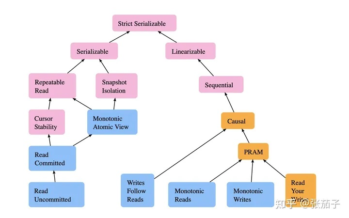
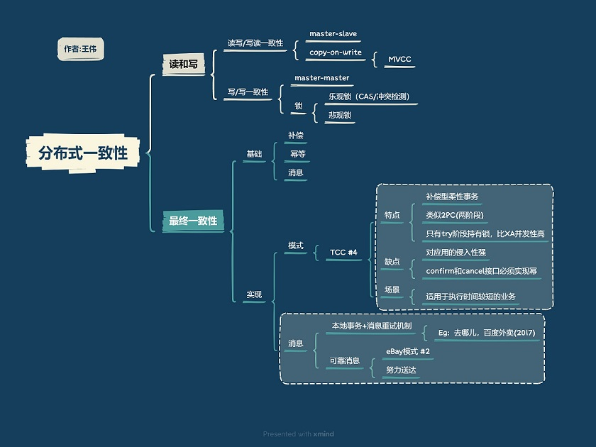
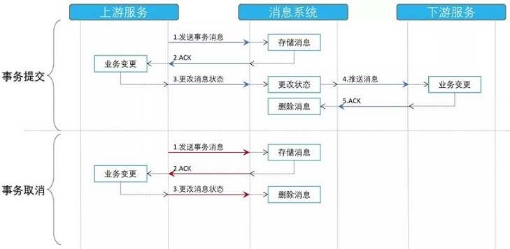
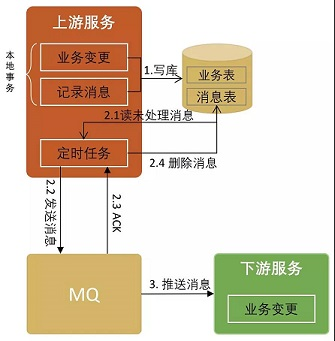
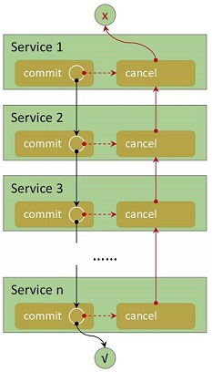

分布式一致性 #

[粉色-Unavailable] 在某些网络故障情况下不可用。为了确保安全，一些或所有节点必须暂停操作。
[黄色-Sticky Available] 只要客户端只与相同的服务器通信而不切换到新的服务器，就可在每个非故障节点上使用。
[蓝色-Total Available] 即使网络完全瘫痪，也可在每个非故障节点上使用。

一致性 #

强一致性模型 #
| 强一致性 | 协议 | 特性 | 工程 |
|---|---|---|---|
| 线性一致性[chat] | 2PC 3PC #1 |
延迟大，吞吐低。全局锁资源 | JTA(XA) {% post_link ’transactionSeata’ Seata XA,AT 非入侵 %} self |
| 顺序一致性[chat] | Paxos #1 | 难理解，延迟大，吞吐中等，全局锁资源 | Google Chubby |
| 顺序一致性 | {% post_link ‘zookeeperZab’ Zab %} self 逻辑时钟 |
类似多线程程序执行顺序的模型 | Zookeeper的读 1.两个主流程，三个阶段 2. Quorum:2f+1个节点，允许f个节点失败 |
| 强一致性 | {% post_link ‘raft’ %} self | 相对Paxos简单。主从，三个阶段 | Go to Page self |
- 逻辑时钟
Lamport提出逻辑时钟是为了解决分布式系统中的时序问题，即如何定义a在b之前发生. Java中有happen-before

图2. 逻辑时钟 logic-clock
-
线性一致性 Linearizability
线性一致性 #1： 严格一致性（Strict Consistency）或者原子一致性（Atomic Consistency） 一个操作对于系统的其他部分是不可中断的 -
顺序一致性 Sequential
- 任何一次读写操作都是按照某种特定的顺序。
- 所有进程看到的读写操作顺序都保持一致。
顺序一致性虽然通过逻辑时钟保证所有进程保持一致的读写操作顺序，但这些读写操作的顺序跟实际上发生的顺序并不一定一致。而线性一致性是严格保证跟实际发生的顺序一致的。
-
Paxos、ZAB 和 RAFT 有以下几个主要的共同点[Claude]:
- 都通过选举 Leader 来接受客户端请求, Leader 接收写操作,然后同步给 Follower 节点,保持集群数据的一致性。
- 都使用**日志(log)**来记录节点状态的变更,Follower 节点通过应用相同的日志来保持数据一致。
- 都通过多个阶段来实现一致性,例如Prepare 阶段 和 Commit 阶段。
- 都需要超过半数以上的节点达成一致(quorum),才能提交日志。
弱一致性模型 #
因果一致性 #
| 因果一致性 | 协议 | 特性 | 工程 |
|---|---|---|---|
| 因果一致性 |
向量时钟 Vector clock[向量时钟] 图1 | 微信朋友圈的评论, Dynamo |
- 向量时钟

图1. 向量时钟 vector-clock
客户端为中心的一致性（Client-centric Consistency） #
-
客户端为中心的一致性
- 最终一致性
- 以客户端为中心的一致性为单一客户端提供一致性保证，保证该客户端对数据存储的访问的一致性，但是它不为不同客户端的并发访问提供任何一致性保证.
-
类型
- 单调读一致性（Monotonic-read Consistency）
**kafka的消费者的单调读 ** - 单调写一致性（Monotonic-write Consistency）
- 读写一致性（Read-your-writes Consistency）
- 写读一致性（Writes-follow-reads Consistency）
- 单调读一致性（Monotonic-read Consistency）
最终一致性 #
| 最终一致性 | 协议 | 特性 | 工程 |
|---|---|---|---|
| 反熵Anti-Entropy |
Gossip | Cassandra， redis的集群状态的同步机制 |
Sloppy quorum #
| Sloppy quorum | 特性 | 工程 |
|---|---|---|
| R+W>N[ReadQurum-WriteQurum] | 可定制 | Dynamo, Cassandra 定制灵活 |
最终一致性-工程 #
TCC #
- TCC
- 流程
1.主流程控制整个事务
2.分流程提供Confirm和Cancel方法。 - 阶段
Try: 阶段1的业务执行
Confirm: 阶段2的业务执行
Cancel: 回滚Try阶段执行的业务流程和数据 - TCC FMT
{% post_link ’transactionSeata’ Seata TCC %} self
- 流程
1.主流程控制整个事务
基于事务消息的分布式事务 #
-
EBay模式 [8]
-
正向流程
- [本地事务+幂等业务接口+half消息]
- 消息状态
- 初始化：消息为待处理状态
- 业务成功：消息为待发送状态
- 业务失败：消息删除
- 初始化：消息为待处理状态
-
反向流程（异常流程，补偿流程）
- 中间件询问业务执行结果，更新消息状态
-
工程 {% post_link ‘mqRocketmqTransaction’ RocketMQ事务消息 %} self



基于本地消息的分布式事务 #

Saga流程 #
- Saga 1PC (一阶段)
- 基于补偿的消息驱动的用于解决long-running process业务。
- 工程
{% post_link ’transactionSeata’ Seata Saga %} self

弱一致性-工程 #
补偿 #
- 流程
状态查询（成功or失败）+补偿 - 流程细节
定时校验异常 + 补偿
State Machine && Primary-copy #
 state machine replication && primary-copy
state machine replication && primary-copy
-
复制状态机(state machine replication) 多个节点上，从相同的初始状态开始，执行相同的一串命令，产生相同的最终状态
状态机 + 命令 -> 重放 -
state machine replication例子
mysql主从复制 slave relay log, 基于sql语句的复制[9];
redis AOF -
primary-copy例子:
zookeeper的主从复制;
mysql主从复制 slave relay log, 基于行的复制[9];
redis RDB 快照;
参考 #
一致性 #
- 保证分布式系统数据一致性的6种方案 高可用架构 ***
- 深入解析NoSQL数据库的分布式算法 ***
- ZooKeeper真不是最终一致性的，而是顺序一致性 陈东明
- 为什么程序员需要关心顺序一致性（Sequential Consistency）而不是Cache一致性（Cache Coherence） carlosstephen
- 分布式系统：一致性模型 阿里 Overview ***
- ENode 1.0 - Saga的思想与实现 汤雪华
- 《大数据日知录：架构与算法》 张俊林
- Base: An Acid Alternative Ebay模式 ***
- 如何选择分布式事务解决方案？ ali ***
- {% post_link ‘NoSQL’ %} self 一致性
- （建议收藏）万字长文总结分布式事务，总有一款适合你 *** 腾讯
- 《数据密集型应用系统设计》笔记五：第五章 数据复制 未
应用 #
- 数据一致性检测应用场景与最佳实践 阿里 未
向量时钟 #
- 向量时钟Vector Clock in Riak
- Why Vector Clocks Are Hard 未
- Dynamo: Amazon’s Highly Available Key-value Store paper 未
向量时钟的变种 版本向量（Version vector） 版本控制机制 - 分布式系统：向量时钟 阿里 肖汉松 ***